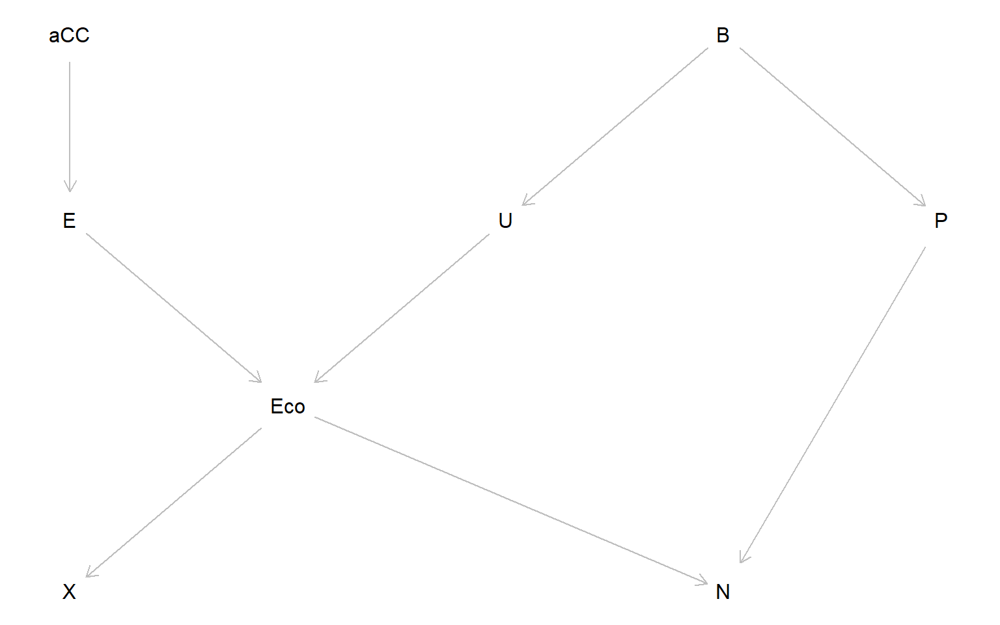

source("clima-modelo.R", encoding = "UTF-8")
red <- crear_clima()
g <- a_dagitty(red)
bnlearn::modelstring(bnlearn::bn.net(red))[1] "[B][aCC][E|aCC][P|B][U|B][Eco|E:U][N|Eco:P][X|Eco]"Versión 0.1 · 2026-10-08 · Material didáctico para revisión docente. Adaptación del ejemplo de Miguel Equihua y Octavio Pérez Maqueo, Lo Básico de Redes Bayesianas (2023), con asistencia de IA en la revisión y el código.
Objetivo: distinguir lo que supone el grafo, lo que cuantifican sus tablas y lo que responde una consulta. Requisitos: nociones de probabilidad condicional y manejo elemental de R. Este recurso se incorpora cuando el grupo esté preparado; no fija una segunda sesión obligatoria.
Conservamos los ocho nodos, los ocho arcos y todas las probabilidades del ejemplo original para hacer su revisión reproducible. Son números hipotéticos, no estimaciones empíricas ni probabilidades científicamente calibradas del cambio climático. En particular, 0.99 no cuantifica aquí la evidencia sobre su existencia. Para una aplicación real habría que definir exposición climática local, periodo, unidades de observación y fuentes de estimación.
| Nodo | Significado didáctico heredado | Estados |
|---|---|---|
| aCC | Cambio climático, variable simplificada del ejemplo | presente / ausente |
| B | Interés económico predominante | madera / paisaje |
| E | Pérdida de especies | presente / ausente |
| U | Aprovechamiento forestal extractivo | presente / ausente |
| P | Disfrute del paisaje | presente / ausente |
| Eco | Tipo de cobertura | plantacion / natural |
| N | Especies nativas | abundantes / escasas |
| X | Especies exóticas | abundantes / escasas |
Los nombres y umbrales requieren definición operacional antes de usar datos. Eco representa un tipo de cobertura: no mide integridad ecosistémica. Esta red tampoco implementa el modelo iie-3t. Sirve para aprender herramientas que luego se aplicarán a una red justificada para ese modelo.
El proyecto usa R y las bibliotecas bnlearn y dagitty, registradas en renv.lock. Para trabajar con el modelo por separado, descargar clima-modelo.R y cargarlo desde su carpeta con source("clima-modelo.R"). En el proyecto, desde la raíz, se usa source("blog/recursos/clima-modelo.R"). La compilación de esta página lo carga desde la carpeta de recursos.
[1] "[B][aCC][E|aCC][P|B][U|B][Eco|E:U][N|Eco:P][X|Eco]"
La factorización es:
\[ p(aCC,B,E,U,P,Eco,N,X)=p(aCC)p(B)p(E\mid aCC)p(U\mid B) p(P\mid B)p(Eco\mid E,U)p(N\mid P,Eco)p(X\mid Eco). \]
Una red bayesiana define una distribución mediante esta factorización. Interpretar sus arcos como mecanismos causales requiere justificación adicional. Por ejemplo, E → Eco y P → N requieren explicar mecanismos, orden temporal y causas omitidas. El consenso del grupo documenta hipótesis, pero no demuestra su validez.
custom.fit() asigna tablas propuestas; no las estima a partir de observaciones. En cada configuración de padres, las probabilidades de los estados del hijo deben sumar uno. Los nombres de las dimensiones evitan confundir el orden de padres.
aCC
E presente ausente
presente 0.99 0.95
ausente 0.01 0.05, , U = presente
E
Eco presente ausente
plantacion 1 0
natural 0 1
, , U = ausente
E
Eco presente ausente
plantacion 0 0
natural 1 1La tabla de E supone 0.99 frente a 0.95: la diferencia es 0.04, no 0.99 de efecto atribuible al clima. En U se supone aprovechamiento con probabilidad 0.99 bajo interés maderero y 0.90 bajo interés paisajístico. Estas elecciones no están calibradas y limitan el contraste didáctico.
La tabla de Eco es determinista: hay plantación si y solo si E y U están presentes. No es una ley ecológica; produce combinaciones imposibles y enseña por qué debemos revisar las tablas además del dibujo. Conservamos esa elección visible, sin reemplazarla silenciosamente por otra. Si el grupo propone una tabla no determinista, debe guardar la variante y justificar sus valores.
La ausencia de arco directo no implica independencia marginal. Hay que especificar las variables condicionadas y examinar todas las rutas. Bajo la propiedad de Markov del DAG, separación-d implica independencia condicional. Una ruta abierta permite dependencia; no la garantiza para toda elección de parámetros. No confundamos independencia con correlación cero: esta última puede coexistir con dependencia no lineal.
| Estructura aislada | Sin condicionar | Al condicionar en M |
|---|---|---|
| A → M → Y | Ruta abierta | Ruta bloqueada |
| A ← M → Y | Ruta abierta | Ruta bloqueada |
| A → M ← Y | Ruta bloqueada | Ruta abierta |
Observar un descendiente del colisionador también puede abrir la ruta. Estas reglas locales no eximen de revisar las otras rutas del grafo completo.
consulta separados
1 aCC y Eco FALSE
2 aCC y Eco dado E TRUE
3 E y U TRUE
4 E y U dado Eco FALSEB _||_ E
B _||_ Eco | U
B _||_ N | Eco, P
B _||_ N | P, U
B _||_ X | Eco
B _||_ X | U
B _||_ aCC
E _||_ N | Eco, P
E _||_ N | B, Eco
E _||_ N | Eco, U
E _||_ P
E _||_ U
E _||_ X | Eco
Eco _||_ P | B
Eco _||_ P | U
Eco _||_ aCC | E
N _||_ U | B, Eco
N _||_ U | Eco, P
N _||_ X | Eco
N _||_ aCC | E
N _||_ aCC | Eco, U
N _||_ aCC | B, Eco
N _||_ aCC | Eco, P
P _||_ U | B
P _||_ X | Eco
P _||_ X | U
P _||_ X | B
P _||_ aCC
U _||_ X | Eco
U _||_ aCC
X _||_ aCC | E
X _||_ aCC | EcoaCC y Eco no tienen arco directo, pero la cadena a través de E está abierta. E y U están separados sin evidencia; al observar Eco deja de haber separación-d. Las independencias enumeradas son implicaciones del modelo, no hechos ecológicos ya comprobados.
Observar Eco = natural selecciona casos de la distribución original: calculamos \(p(E\mid Eco=natural)\). Intervenir idealmente sobre Eco reemplaza su mecanismo y elimina los arcos que llegan a ese nodo: calculamos \(p(E\mid do(Eco=natural))\), si aceptamos para el ejercicio una interpretación causal del grafo. Ese supuesto no convierte el cálculo en una recomendación de manejo.
j <- conjunta(red) # Enumeración exacta de los 256 estados posibles.
do_red <- bnlearn::intervention(red, evidence = list(Eco = "natural"))
resultados <- data.frame(
consulta = c("Sin evidencia", "Observando Eco = natural", "Interviniendo Eco = natural"),
prob_E = c(
prob_exacta(j, list(E = "presente")),
prob_exacta(j, list(E = "presente"), list(Eco = "natural")),
prob_exacta(conjunta(do_red), list(E = "presente"))
)
)
knitr::kable(resultados, digits = 6)| consulta | prob_E |
|---|---|
| Sin evidencia | 0.989600 |
| Observando Eco = natural | 0.839575 |
| Interviniendo Eco = natural | 0.989600 |
Podemos comprobarlo a mano: \(p(E)=0.99(0.99)+0.01(0.95)=0.9896\) y \(p(U)=0.945\). Como son marginalmente independientes y plantación equivale a la coincidencia de ambos:
\[ p(E\mid Eco=natural)=\frac{0.9896(1-0.945)}{1-0.9896(0.945)}\approx0.839576. \]
Intervenir en Eco deja \(p(E)=0.9896\): no cambia el mecanismo de sus ancestros. Entre los casos naturales, la coincidencia E y U tiene probabilidad cero aunque ambos tienen marginales positivas: ahora son dependientes. Entre las plantaciones, en cambio, los dos quedan fijos en «presente»; la correlación no está definida por falta de variación. La conexión-d no garantiza correlación en cada estrato.
El original fijaba las probabilidades de dos raíces (aCC, B) en 1 para mostrar evidencia. En esta red, condicionar esas raíces e intervenir en ellas coincide numéricamente para el resto de variables. Es un caso particular que no permite generalizar el procedimiento a nodos con padres. Aquí conservamos el modelo observacional y formulamos cada consulta explícitamente.
bnlearn también permite consultas aproximadas por simulación. El resultado varía con la muestra; la enumeración nos da una referencia exacta para esta red pequeña.
aCC
E presente ausente
presente 0.991195318 0.920765027
ausente 0.008804682 0.079234973
Mutual Information (disc.)
data: E ~ U
mi = 0.23647, df = 1, p-value = 0.6268
alternative hypothesis: true value is greater than 0Los datos son simulados por el propio modelo. Este ejercicio verifica una mecánica de estimación; no valida ecológicamente el DAG. El ajuste bayesiano con iss = 1 añade suavizado, por lo que no conserva necesariamente sus ceros deterministas. Es una elección explícita del ejercicio, no un parámetro calibrado.
Un contraste no significativo significa que no rechazamos la hipótesis nula con esa prueba y esos datos. No demuestra independencia: importan potencia, tamaño de muestra, supuestos y sensibilidad del contraste. Con datos reales, discrepancias pueden cuestionar el modelo o el procedimiento de observación; la ausencia de rechazo no certifica causalidad. Tampoco aprender una estructura con hc() demostraría una dirección causal única: pueden existir grafos observacionalmente equivalentes.
Esta red es estática. Repetir consultas con valores distintos no especifica cómo evoluciona un sistema. Un modelo temporal necesita variables indexadas, una distribución inicial y transiciones, por ejemplo:
\[ p(S_0)\prod_{t=1}^T p(S_t\mid S_{t-1},A_{t-1}) \prod_{t=0}^T p(O_t\mid S_t). \]
Aquí \(S_t\) es el estado del sistema, \(A_t\) una entrada y \(O_t\) una observación. La expresión está condicionada a una secuencia de entradas; supone dependencia de primer orden. Si los mecanismos se comparten entre tiempos, se añade homogeneidad temporal. Una red dinámica puede ser predictiva sin ser causal; simular trayectorias no garantiza reproducir una serie observada. No incorporamos todavía una transición climática a este ejercicio.
aCC → Eco pero no hay independencia marginal. Indique qué condicionamiento bloquea sus rutas.Eco, compruebe normalización y documente cómo cambia el resultado. Distinga revisión del supuesto de ajuste con datos.Producto: script ejecutable y una nota con supuestos, resultados y límites. Criterio: distinguir consulta observacional, intervención y transición sin atribuir evidencia empírica a la simulación.
Fuente: Equihua y Pérez Maqueo, Lo Básico de Redes Bayesianas, copia local consultada el 2026-10-08. Adaptación: transferencia del grafo en memoria, representación con R base, inferencia exacta pequeña y contraste observación/intervención; sin dependencia de Miro, Netica o Graphviz. La revisión técnica no equivale a validación científica ni a una licencia pública de reutilización.
En el repositorio, ejecutar desde una sesión nueva: Rscript tests/test-clima.R y Rscript scripts/clima-ejemplo.R. Restaurar primero el entorno con Rscript --vanilla scripts/setup-r.R. Las pruebas contrastan normalización, rutas, cálculos manuales, intervenciones y errores de consulta. La aproximación Monte Carlo admite error absoluto menor que 0.02 frente a la enumeración.
Documentación técnica: tablas y ajuste, consultas condicionales, intervenciones y DAGitty. Consultadas el 2026-10-08.
R version 4.6.0 (2026-04-24 ucrt)
Platform: x86_64-w64-mingw32/x64
Running under: Windows 11 x64 (build 26300)
Matrix products: default
LAPACK version 3.12.1
locale:
[1] C
system code page: 65001
time zone: America/Mexico_City
tzcode source: internal
attached base packages:
[1] stats graphics grDevices datasets utils methods base
loaded via a namespace (and not attached):
[1] digest_0.6.39 fastmap_1.2.0 xfun_0.61 knitr_1.52
[5] parallel_4.6.0 bnlearn_5.2.1 htmltools_0.5.9 rmarkdown_2.32
[9] cli_3.6.6 dagitty_0.3-4 renv_1.2.3 compiler_4.6.0
[13] boot_1.3-32 tools_4.6.0 curl_8.0.0 evaluate_1.0.5
[17] Rcpp_1.1.2 yaml_2.3.12 rlang_1.3.0 jsonlite_2.0.0
[21] V8_8.2.0 MASS_7.3-65